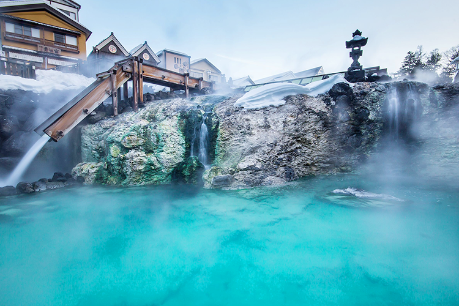
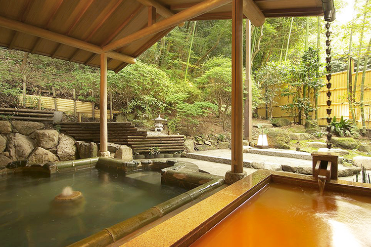
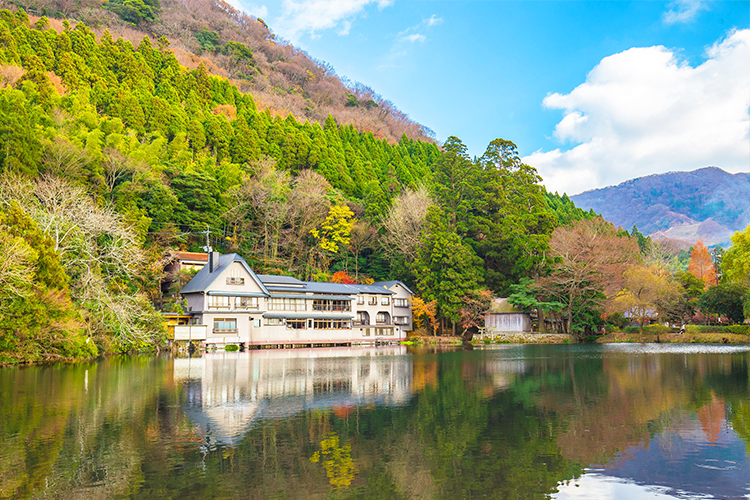

일본 유명 온천지
쿠사츠 온천
도쿄 신주쿠역에서 버스를 타고 3시간 30분, 쿠사츠 온천은 국내 여행자들에게 잘 알려져 있지 않지만 일본에서는 3대 온천 중 하나로 꼽힌다. 쿠사츠 온천의 원천은 분 당 32,300리터 이상의 온천수가 쏟아져 나올 정도로 유량이 풍부하고, 수질도 훌륭하다. 뜨거운 온천수를 식히기 위한 온천 밭, 유바타케는 오직 쿠사츠에서만 볼 수 있는 독특한 풍경이다. 온천 마을 특유의 고즈넉한 분위기가 매력적이며, 유카타 차림으로 마을을 산책하며 온천 순례를 할 수 있다는 것도 쿠사츠 온천의 매력 포인트.
아리마 온천
오사카와 고베가 있는 간사이 지역의 대표 온천 여행지, 아리마 온천은 일본에서 가장 오래된 온천 중 하나라고 알려져 있다. 온천수의 성분들도 뛰어나기로 유명한 아리마의 대표적인 탕이라고 하면 킨노유(금탕)과 긴노유(은탕)를 들 수 있다. 킨노유는 철분 성분이 많아 붉게 산화된 적갈색 온천이며, 긴노유는 탄산을 함유한 무색투명한 온천이다. 대부분의 아리마 온천 료칸들에서는 이 두 가지 온천을 모두 이용할 수 있으니 꼭 두 온천을 비교하며 만끽하도록 하자.
유후인 온천
한국인에게 가장 사랑받는 일본 온천여행지 1위, 바로 유후인이다. 유후타케 산과 긴린코 호수로 대표되는 아름다운 자연, 아기자기한 아이템이 넘쳐나는 상점가 거리, 미술관과 카페가 넘쳐나는 예술적 분위기까지! 초보 온천 여행자라고 하더라도 절대 실패하지 않을 매력 만점 여행지다. 유후인의 온천료칸은 마을 여기저기에 분산되어 있으며, 개별 노천온천이 있는 객실을 갖춘 료칸들도 많아 일행끼리 오붓하게 온천 여행을 만끽할 수 있다.